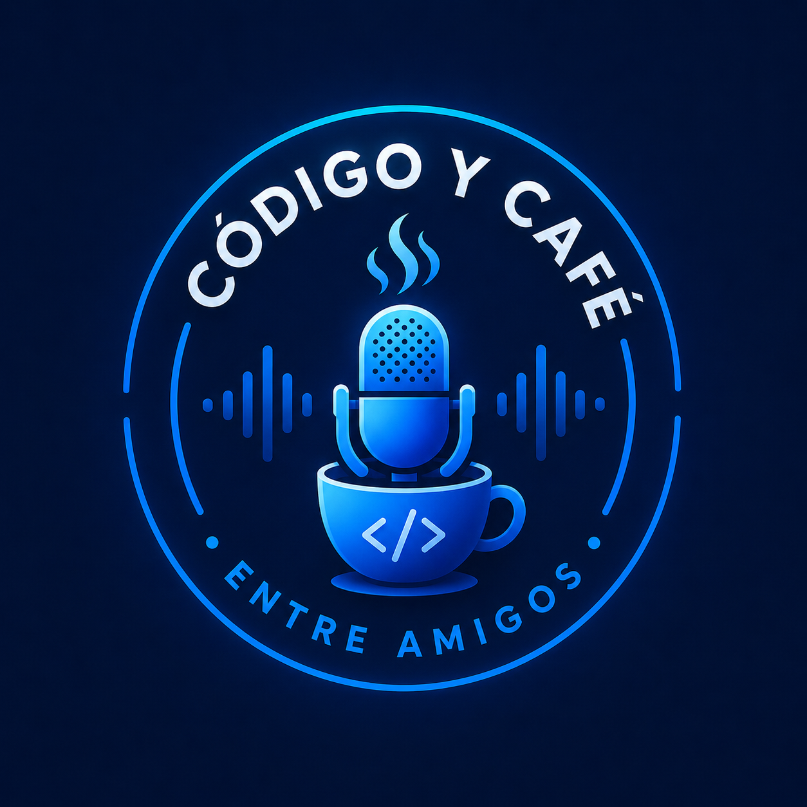

Somos un grupo de amigos apasionados por la programación, el diseño y la innovación. Muy pronto comenzaremos este podcast donde compartiremos experiencias, debates, aprendizajes y anécdotas sobre el mundo de la tecnología.
Estos serán algunos de los temas que exploraremos en nuestros primeros episodios.
Ventajas, desventajas y cuál elegir según tus necesidades.
¿Cuál camino elegir para comenzar en desarrollo?
La importancia del diseño en las aplicaciones modernas.
Cómo está cambiando la forma en que programamos.
Servicios en la nube y herramientas imprescindibles.
Experiencias, consejos y errores que aprendimos en el camino.
Apasionado por la tecnología y la conversación sin filtro. Siempre está explorando nuevas herramientas, compartiendo experiencias y aportando ideas para que cada episodio sea una mezcla de aprendizaje, humor y curiosidad.
Soñadora digital, amante del café y de los proyectos creativos. Disfruta hablar sobre desarrollo, diseño, innovación y las historias que hay detrás de cada línea de código, buscando inspirar a quienes comienzan en el mundo de la tecnología.
Siempre con un café en la mano, listo para debatir, bromear y compartir conocimientos. Le apasiona descubrir nuevas tendencias tecnológicas y convertir temas complejos en conversaciones fáciles de entender.
Busca el equilibrio entre programación, sistemas y buen humor. Le gusta analizar problemas desde diferentes perspectivas y aportar soluciones prácticas mientras mantiene un ambiente relajado y ameno en cada episodio.
Entusiasta de la programación y de las conversaciones profundas sobre tecnología. Siempre está dispuesto a compartir conocimientos, aprender algo nuevo y explorar cómo la innovación puede transformar nuestro día a día.
Creemos que las mejores conversaciones sobre tecnología nacen entre amigos y con una buena taza de café. Este podcast busca acercar el mundo del desarrollo de software de una forma sencilla, entretenida y cercana para quienes están empezando y para quienes ya forman parte de la comunidad tecnológica.
¿Tienes alguna idea para un episodio o quieres colaborar con nosotros? Escríbenos.